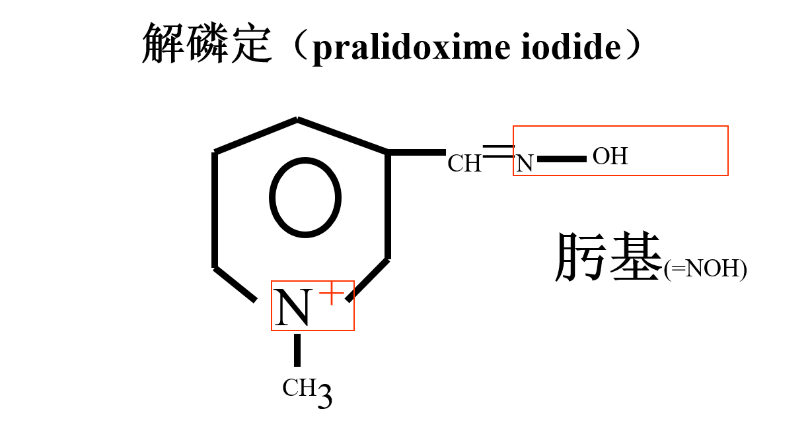

抗胆碱酯酶药和抗胆碱酯酶复活药¶
1. 胆碱酯酶（Cholinesterase，ChE）¶
1.1 真性胆碱酯酶（乙酰胆碱酯酶， AChE）¶
分布：
胆碱能神经元、胆碱能神经元突触间隙、骨胳肌神经效应器接头、红细胞
特点：
活性高，6×10^{5} ACh分子/ min
1.2 假性胆碱酯酶（丁酰胆碱酯酶，BChE）¶
分布：
神经胶质细胞、血浆、肝、肾、肠
特点：
特异性低，可水解ACh，但速度慢，也可水解其他胆碱酯类 （琥珀胆碱，丁酰胆碱，普鲁卡因）
1.3 AChE结构与作用过程¶
阴离子部位（含谷氨酸残基）
酯解部位（包括组氨酸咪唑环：构成碱性作用点；丝氨酸羟基：构成酸性作用点
水解过程
① ACh季铵阳离子，以静电引力与 酶的阴离子部位结合，酶酯解部位丝氨酸羟基与ACh羰基碳结合。
② ACh与AChE复合物裂解，释放胆碱和乙酰化AChE
③ 乙酰化AChE迅速水解，分离出乙酸，恢复酶活性。
药物作用方向为调整结合AChE形成化合物的稳定性（离子键、共价键），使AChE活性受到抑制
易逆性抗胆碱酯酶药（新斯的明、毒扁豆碱）、难逆性抗胆碱酯酶物（毒物、有机磷酸酯类）
各AChE化合物稳定性：
乙酰化AChE的水解非常迅速，以毫秒计算（乙酰胆碱、依酚氯铵、他克林、多奈哌齐）
氨甲酰化AChE的水解速度缓慢，以小时计算（为可逆性， AChE的功能的恢复较慢，大多数药物）
磷酰化AChE的水解速度极慢，以天计算（难逆性、AChE的功能的恢复极慢）
2. 可逆性抗AChE药¶
2.1 新斯的明（neostigmine）¶
结构：
二甲氨基甲酸酯
特点：
选择性高，对骨骼肌、胃肠平滑肌作用强，对腺体、眼、心血管、支气管作用弱。
体内过程：
1）含季铵基团，不通过血脑屏障，无中枢作用；不透过角膜，对眼睛无明显作用。
2）口服吸收差，口服剂量比皮下注射剂量大10倍以上【易发生医疗事故】。临床采用皮下或肌肉注射，静脉注射有一定危险性。注射后5~10min起作用，维持2~4h。
3）体内部分被假性胆碱酯酶水解，部分以原形肾排。
临床应用：
1）重症肌无力（结合手术切除胸腺、内科药物治疗、免疫抑制治疗、放射治疗等综合性措施）
2）减轻术后腹气胀和尿潴留
3）非除极化肌松药中毒：如筒箭毒碱
4） 阵发性室上性心动过速
5） 阿托品中毒
6） 青光眼
不良反应
主要为胆碱能神经过度兴奋；胆碱能危象
禁忌证
机械性肠梗阻、尿路闭塞支气管哮喘等
2.2 毒扁豆碱（physostigmine）¶
叔胺类，脂溶性高，口服、注射和黏膜给药均可吸收；
吸收后产生全身作用，局部用于眼科。
水溶液不稳定，药液为棕色，易氧化，变成红色，疗效减弱，而且刺激性大。
临床应用：
青光眼、阿托品中毒
与毛果芸香碱治疗青光眼的区别：
1 2 3 4 5 6 7 8 9 10 11 12 | 毛果芸香碱 毒扁豆碱
（pilocarpine） （physostigmine, eserine）
作用 降低眼内压 降低眼内压
作用机理 (+)瞳孔括约肌M-R (-) AChE
直接作用 间接作用
用途 青光眼 青光眼
起效 30～40min 5 min
作用维持 4～8 h 1~2天
刺激性 弱 强
浓度 1~2% 0.05%
性质 稳定 不稳定，易分解避光保存
不良反应 调节痉挛 调节痉挛
|
2.3 依酚氯胺（edrophonium choride）（腾喜龙，tensilone）¶
特点：
超短时抗AChE药，作用较弱，但对骨骼肌有强兴奋作用；
起效快、作用强、维持短。
iv 30秒起效，维持2～4 min，5～15min后作用消失，故不作为治疗用药。
用途：
诊断重症肌无力
鉴别诊断新斯的明的用量
非除极化肌松药的解救
2.4 他克林（tacrine）¶
特点：
1）口服易吸收，但首关消除明显，生物利用度及个体差异均较大。 2）中枢AChE抑制药，中枢滞留时间长，主要用于治疗阿尔茨海默病（早老痴呆病），改善患者认识和定向能力。对轻、中度患者较好。 3）最常见和最严重的毒性为肝毒性，转氨酶升高，如出现黄疸时，应立即停药。
2.5 加兰他敏(galanthamine)¶
特点
抗AChE作用只有毒扁豆碱的1/10，
对重症肌无力疗效较差，主要用于脊髓灰质炎 （小儿麻痹症）后遗症治疗，以改善肌无力症状。
也用于非去极化肌松药中毒的解救
2.6 地美溴铵（demecarium bromide）¶
特点：
抗AChE作用快、持久，滴眼后15~60 min瞳孔缩小，24h眼内压降低达高峰，可持续9天以上。
主要用于青光眼治疗。
特别适应于开角型青光眼及其它药治疗无效者。
3. 难逆性抗AChE物¶
有机磷酸酯类（Organophosphate）
1 2 3 4 5 6 7 8 9 10 11 12 | 农业杀虫剂：
甲拌磷（phorate）
对硫磷（parathion）
内吸磷（demeton）
敌敌畏（DDVP）
敌百虫（美曲膦脂，dipterex）
乐果（dimethoate）
军用毒剂：
塔崩（tabun）
沙林（sarin）(滴针眼大小的沙林毒气液体就能导致一名成人很快死亡)
梭曼（soman）毒性比沙林大3倍
|
理化特性：
油状、结晶状，淡黄色至棕色
难溶于水，易溶于有机溶剂
大蒜样臭味
碱性条件下易分解失效（除敌百虫）
中毒机制：
1）与AChE形成共价结合，生成难解离的磷酰化胆碱酯酶，使AChE失去水解ACh能力
2）在突触间隙聚集，M和N受体过度兴奋并产生中枢症状
有机磷农药中毒一般分为轻、中和重三级：
轻度中毒：胆碱酯酶活力降低至正常值的50～70％，出现头痛、头晕、恶心、呕吐、多汗、视力模糊、无力、胸闷、瞳孔缩小等症。（M样）
中度中毒：胆碱酯酶活力降低至正常值的30～50％，可出现肌肉颤动、轻度呼吸困难、腹痛、腹泻、流涎、瞳孔明显缩小等症。（M+N样）
重度中毒：胆碱酯酯活力降至正常值的30％以下，出现呼吸极度困难、肌肉颤动、瞳孔缩小如针、昏迷、大、小便失禁等症者。（M+N+中枢）
解救关键环节：
保证生命体征平稳
(2)纠正水和电解质的紊乱。
(3)掌握输液速度和液量：对有肺水肿或脑水肿的病人应严格掌握输液速度和液量。
(4)输新鲜血：对治疗中症状改善不明显者可输新鲜血，补充提高胆碱酯酶的活力。
(5)肾上腺皮质激素：重度中毒的病人可给肾上腺皮质激素，以抑制抗体对药物的反应，改善脑水肿和水肿，解除支气管痉挛及喉水肿。
(6)密切观察：应密切观察24～48h，以免重复出现症状。阻止农药继续吸收
温水、肥皂水洗皮肤 2％碳酸氢钠溶液，生理盐水等洗胃、洗眼睛 敌百虫------碱性溶液------敌敌畏（毒性更强） 对硫磷------高锰酸钾------对氧磷对因与对症治疗（对因：复活AChE，对症：对抗ACh效应）
- 尽快恢复AChE的活性
复活胆碱酯酶－解磷定¶
-
碘解磷定
-
氯解磷定
-
双复磷

解磷定解救有机磷酸酯类中毒的机制：
1）复活AChE
解磷定正电荷的季铵氮与磷酰化AChE的阴离子部位通过静电引力结合，其肟基（=N－OH）与磷酰化AChE的磷酰基形成共价键，生成磷酰化AChE和碘解磷定的复合物，后者进一步裂解成磷酰化碘解磷定由尿排出，同时使AChE游离出来，恢复其活性。
2）与有机磷酸酯类直接结合
解磷定能与体内游离的有机磷酸酯类直接结合，形成无毒的磷酰化解磷定，经肾排泄，阻止游离有机磷酸酯类进一步与AChE结合，避免继续中毒。
解毒疗效：
不同磷酸酯类：
甲胺磷、对硫磷、马拉硫磷 > 敌百虫、敌敌畏【乐果无效】
不同症状：
骨骼肌 > 中枢神经系统 > 植物神经系统
三种解磷定的主要异同点：
1 2 3 | 注： im intramuscular injection iv intravenous injectio |
对抗毒蕈碱样效应¶
M受体阻断药——阿托品(Atropine）
阿托品化：
尽早、尽快、较大剂量
M受体兴奋症状消失
轻度阿托品中毒症状：潮红、心率快、皮肤干燥等
注意防止阿托品中毒
瞳孔散大、意识障碍
解救原则总结¶
1）迅速消除毒物以免继续吸收
1 2 | 皮肤吸收：立即用肥皂水清洗皮肤（敌百虫不可） 口服中毒：NaHCO3或盐水洗胃（敌百虫不可用碳酸氢钠） |
2） 尽快使用解毒药物（直至M症状消失）
1 2 | 阿托品：较大剂量，直至M症状消失或出现阿托品轻度中毒症状（阿托品化）。 阿托品＋AChE复活剂：对中、重度中毒者，减少ACh含量，彻底消除病因。 |